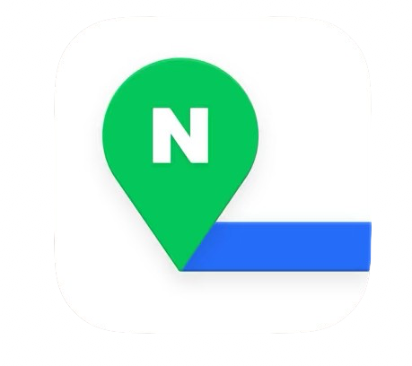
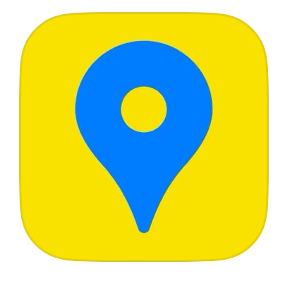
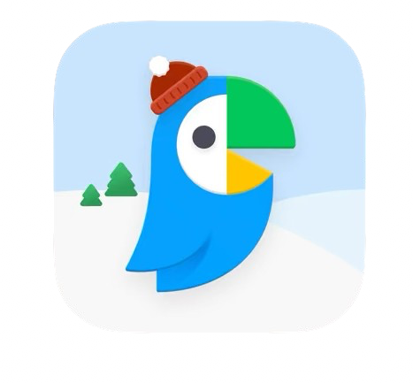
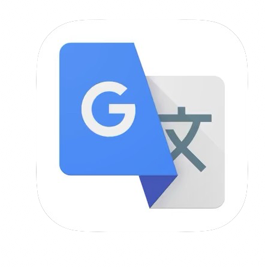
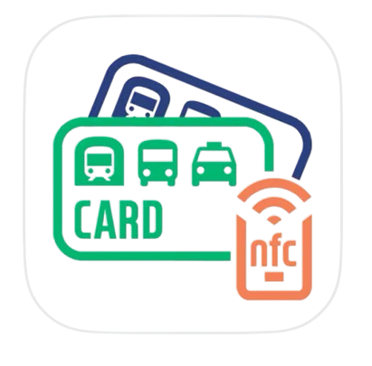
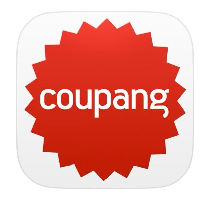
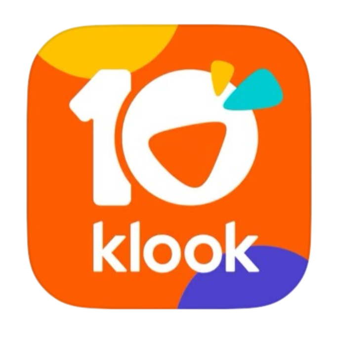

Back to Korea
Essential Apps for Surviving in Korea
1. Naver Maps 
Why Google Maps doesn’t work in Korea:
Due to security regulations, Google Maps can’t provide turn-by-turn navigation for walking, driving, or biking in Korea.
Naver Maps Features:
- ✅ Provides walking, public transit, and driving directions
- ✅ Shows detailed subway and bus routes (including times and fares)
- ✅ Has an English version
Alternative: Kakao Maps (to each their own). 
2. KakaoTalk
- ✅ Free messaging, voice calls, and video calls internationally
- ✅ Works on Wi-Fi and mobile data, so no need for a Korean SIM card
- ✅ Businesses and schools use it for announcements and group chats
3. Papago 
- ✅ Created specifically for Korean-English translation
- ✅ Supports text, voice, and image translation
- ✅ Has an honorifics mode for formal situations
- ✅ Works offline (you can pre-download languages)
Alternative: Google Translate 
4. BucaCheck 
- ✅ Shows real-time balance on your T-Money card
- ✅ Helps track spending on public transport
- ✅ Works with multiple cards
5. Coupang Eats (Korea’s Doordash)
If you plan on ordering food but don’t want to deal with Korean-only apps like Baemin, Coupang Eats is the best option for foreigners.
- ✅ Supports English interface
- ✅ No delivery fees for Coupang WOW members
Alternative: Baemin (배달의민족): Korea's most popular food delivery app .
6. Kakao T (Korea’s Uber)
Taxis in Korea are affordable, but hailing them on the street isn’t always reliable—especially at night or in busy areas.
- ✅ Call taxis and input your destination beforehand
- ✅ Pay through the app or in cash/card upon arrival
- ✅ See estimated fares before booking
Alternative: Uber exists in Korea but is more expensive and not widely used.
7. Coupang (The Amazon of Korea) 
If you need next-day (or even same-day) delivery, Coupang (쿠팡) is the best app for online shopping in Korea.
- ✅ Order anything (groceries, electronics, toiletries, clothes)
- ✅ Rocket Delivery gets items to your door overnight
- ✅ Accepts foreign credit cards
Alternative: Gmarket and 11st also offer English-friendly online shopping.
8. Klook & Trazy 
If you’re planning to visit theme parks, palaces, concerts, or need SIM cards & transportation passes, Klook and Trazy can help!
- ✅ Discounted tickets for major attractions
- ✅ Convenient mobile vouchers (no need to print anything!)
- ✅ Exclusive deals for foreigners
🚀 Pro Tip: Compare Klook vs. Trazy for the best prices—sometimes one has better discounts than the other (website versions available)!